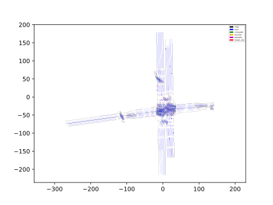
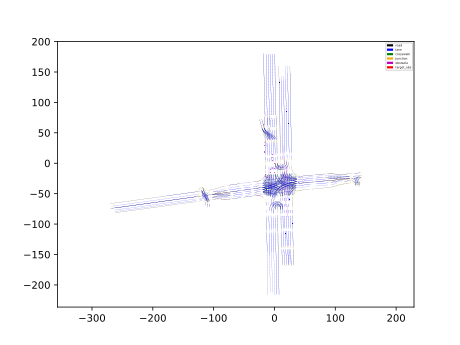

VECTORNET LSTM 评估器
简介
Vectornet lstm evaluator 基于对环境和其他交通参与者的图网络编码。与基于卷积网络编码的语义地图模型相比，它有着更少的参数和更好的表现。

代码流程及框架
线上推理代码 vectornet evaluator
Vectornet lstm evaluator 基于对环境和其他交通参与者的图网络编码。与基于卷积网络编码的语义地图模型相比，它有着更少的参数和更好的表现。

线上推理代码 vectornet evaluator